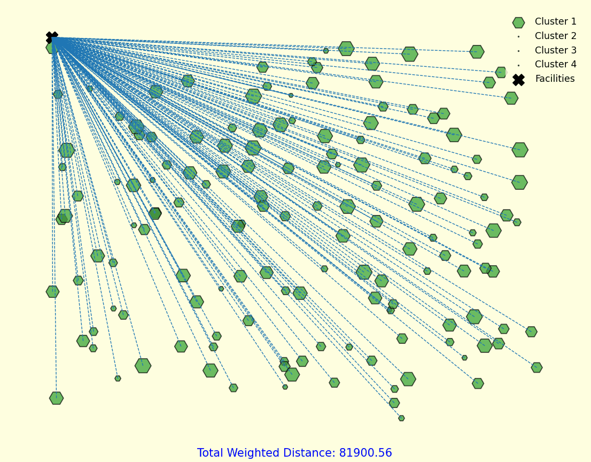

🚀 Optimizing Multi-Facility Location with the Weiszfeld Method 🏭📍
(𝘛𝘩𝘪𝘴 𝘪𝘴 𝘢𝘯 𝘦𝘹𝘵𝘦𝘯𝘴𝘪𝘰𝘯 𝘰𝘧 𝘮𝘺 𝘱𝘳𝘦𝘷𝘪𝘰𝘶𝘴 𝘱𝘰𝘴𝘵 𝘰𝘯 𝘵𝘩𝘦 𝘧𝘢𝘤𝘪𝘭𝘪𝘵𝘺 𝘭𝘰𝘤𝘢𝘵𝘪𝘰𝘯 𝘱𝘳𝘰𝘣𝘭𝘦𝘮. 𝘐𝘯 𝘵𝘩𝘢𝘵 𝘱𝘰𝘴𝘵, 𝘐 𝘢𝘱𝘱𝘭𝘪𝘦𝘥 𝘵𝘩𝘦 𝙒𝙚𝙞𝙨𝙯𝙛𝙚𝙡𝙙 𝘼𝙡𝙜𝙤𝙧𝙞𝙩𝙝𝙢 𝘵𝘰 𝘢 𝙨𝙞𝙣𝙜𝙡𝙚 𝙛𝙖𝙘𝙞𝙡𝙞𝙩𝙮 𝘴𝘤𝘦𝘯𝘢𝘳𝘪𝘰 — 𝘯𝘰𝘸, 𝘐’𝘮 𝘦𝘹𝘱𝘢𝘯𝘥𝘪𝘯𝘨 𝘪𝘵 𝘵𝘰 𝘢𝘥𝘥𝘳𝘦𝘴𝘴 𝙢𝙪𝙡𝙩𝙞𝙥𝙡𝙚 𝙛𝙖𝙘𝙞𝙡𝙞𝙩𝙞𝙚𝙨. 🎯 𝘐’𝘮 𝘦𝘹𝘤𝘪𝘵𝘦𝘥 𝘵𝘰 𝘴𝘩𝘢𝘳𝘦 𝘵𝘩𝘦 𝙋𝙮𝙩𝙝𝙤𝙣 𝙫𝙞𝙨𝙪𝙖𝙡𝙞𝙯𝙖𝙩𝙞𝙤𝙣 𝘵𝘩𝘢𝘵 𝘥𝘦𝘮𝘰𝘯𝘴𝘵𝘳𝘢𝘵𝘦𝘴 𝘩𝘰𝘸 𝘵𝘩𝘦 𝘢𝘭𝘨𝘰𝘳𝘪𝘵𝘩𝘮 𝘢𝘥𝘢𝘱𝘵𝘴 𝘵𝘰 𝘵𝘩𝘪𝘴 𝘮𝘰𝘳𝘦 𝘤𝘰𝘮𝘱𝘭𝘦𝘹 𝘴𝘦𝘵𝘶𝘱.)
🔧 𝗧𝗲𝗰𝗵𝗻𝗶𝗰𝗮𝗹 𝗜𝗻𝘀𝗶𝗴𝗵𝘁:
The classical Weiszfeld Algorithm finds the optimal position of a single facility by iteratively minimizing the weighted sum of Euclidean distances to demand points. To extend this to multiple facilities, each facility is updated independently based on the demand points assigned to it — similar to 𝗸-𝗺𝗲𝗮𝗻𝘀 𝗰𝗹𝘂𝘀𝘁𝗲𝗿𝗶𝗻𝗴 but with 𝗱𝗶𝘀𝘁𝗮𝗻𝗰𝗲-𝘄𝗲𝗶𝗴𝗵𝘁𝗲𝗱 𝗰𝗲𝗻𝘁𝗿𝗼𝗶𝗱𝘀. The key challenge lies in dynamically reassigning demand points to their nearest facilities and recalculating positions until convergence.
💻 I’ve implemented a Python visualization that shows how facility positions stabilize through iterations, forming an efficient network that minimizes total transportation cost.
This kind of modeling is a powerful tool for supply chain design, network planning, and location strategy.
#FacilityLocation #WeiszfeldAlgorithm #SupplyChainDesign #OperationsResearch #Optimization #Python #DataScience #LogisticsTech #MathematicalModeling

Python Code